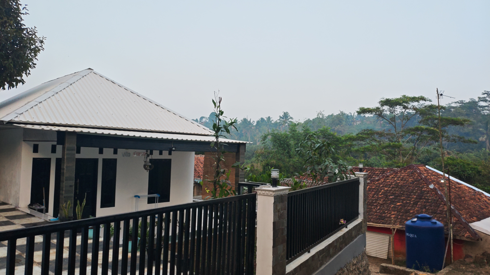
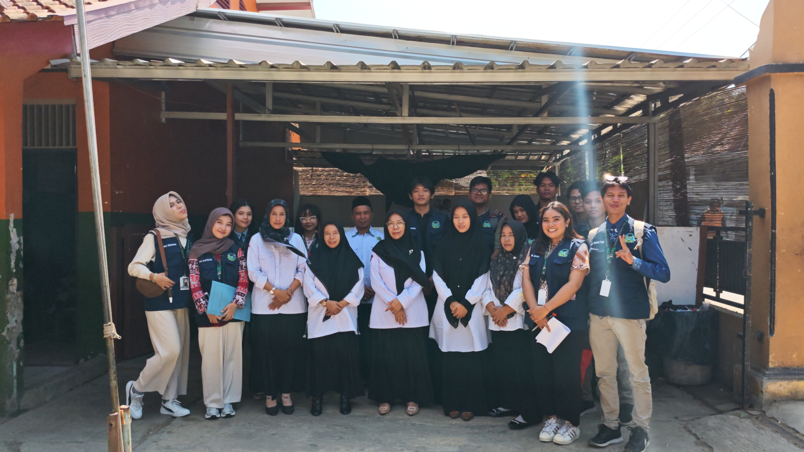
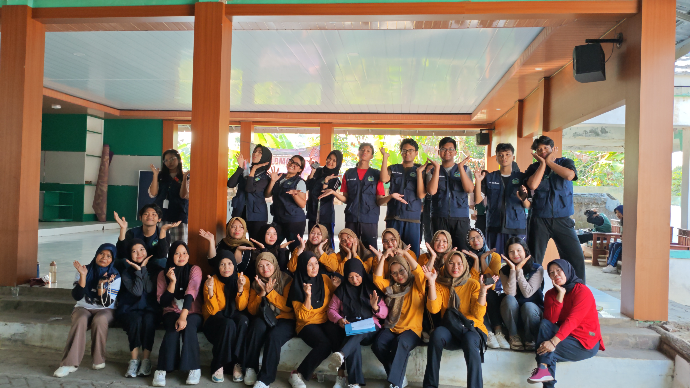
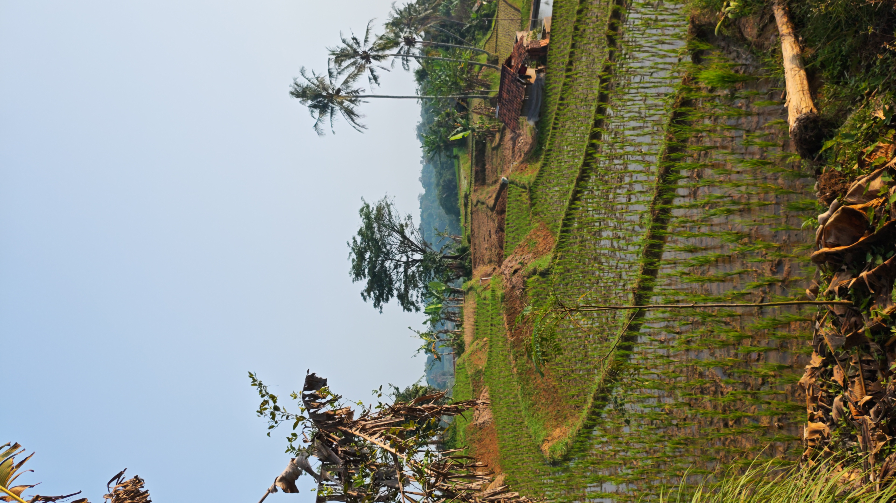

Lebih dari Sekadar Destinasi, Sebuah Pengalaman yang Layak Dikenang
Setiap perjalanan memiliki alasan untuk dikenang. Di Taringgul Tonggoh, Anda akan menemukan perpaduan alam yang menenangkan, cita rasa khas masyarakat lokal, serta keramahan warga yang menjadikan setiap kunjungan terasa lebih hangat dan berkesan.





Nikmati Udara Pegunungan yang Menenangkan
Lepaskan penat dari hiruk pikuk kota dengan panorama persawahan, udara sejuk pegunungan, dan suasana pedesaan yang masih alami. Tempat yang tepat untuk beristirahat sekaligus menikmati keindahan alam.
Jelajahi Kuliner dan UMKM Lokal
Berbagai kuliner rumahan, jajanan tradisional, hingga produk UMKM unggulan menjadi bagian dari pengalaman berkunjung. Setiap pembelian turut mendukung pertumbuhan ekonomi masyarakat desa.
Rasakan Kehangatan Kehidupan Desa
Berinteraksi dengan masyarakat, melihat aktivitas sehari-hari, dan menikmati suasana desa yang ramah akan memberikan pengalaman yang sulit ditemukan di destinasi wisata perkotaan.